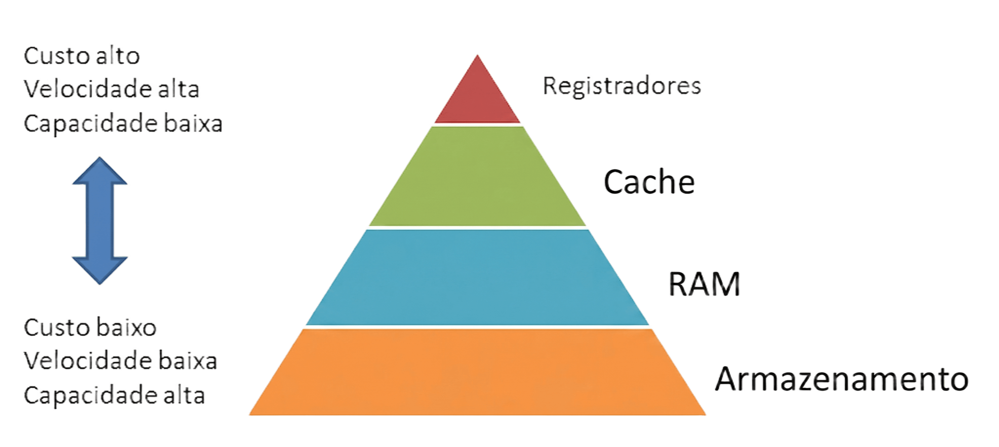
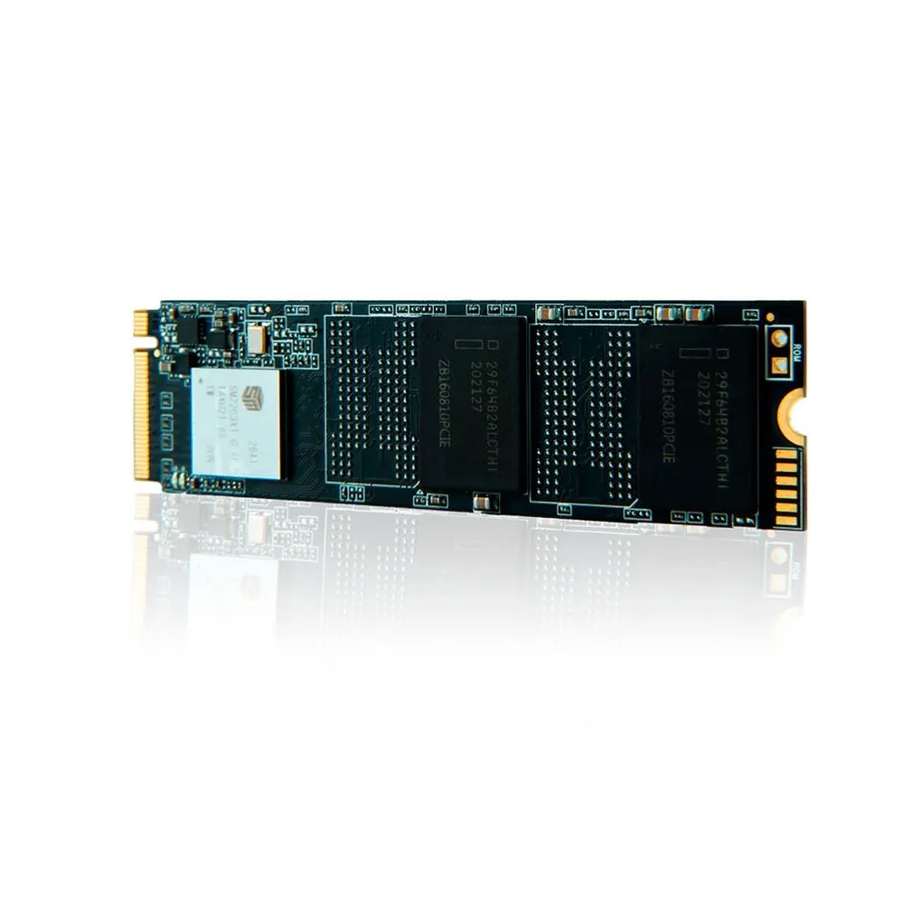
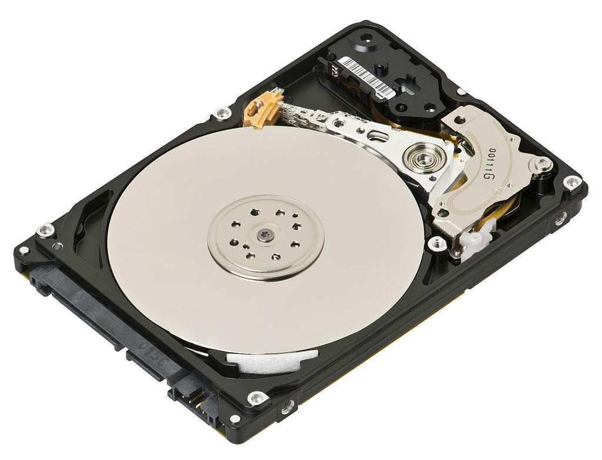

Compreendendo a Hierarquia de Memória
A hierarquia de memória é uma organização estrutural baseada no princípio da localidade, projetada para otimizar o tempo de acesso aos dados e o custo de armazenamento em sistemas digitais. O objetivo central é fornecer ao processador a ilusão de uma memória tão rápida quanto a tecnologia mais veloz disponível, e tão ampla quanto a tecnologia de armazenamento mais barata.

O Papel dos Registradores e da Memória Cache
No topo da hierarquia, operando na mesma velocidade do processador, encontram-se os registradores. Eles armazenam os dados imediatamente necessários para a execução das instruções. Logo abaixo, a memória Cache atua como um buffer temporário de alta velocidade, reduzindo a latência de acesso à memória principal. O trânsito de dados entre essas camadas é fundamental para evitar ciclos de ociosidade na CPU.

Voltar ao topo
Galeria de Componentes de Hardware




Voltar ao topo
Envie suas Dúvidas

Voltar ao topo
Mural do Laboratório


Voltar ao topo